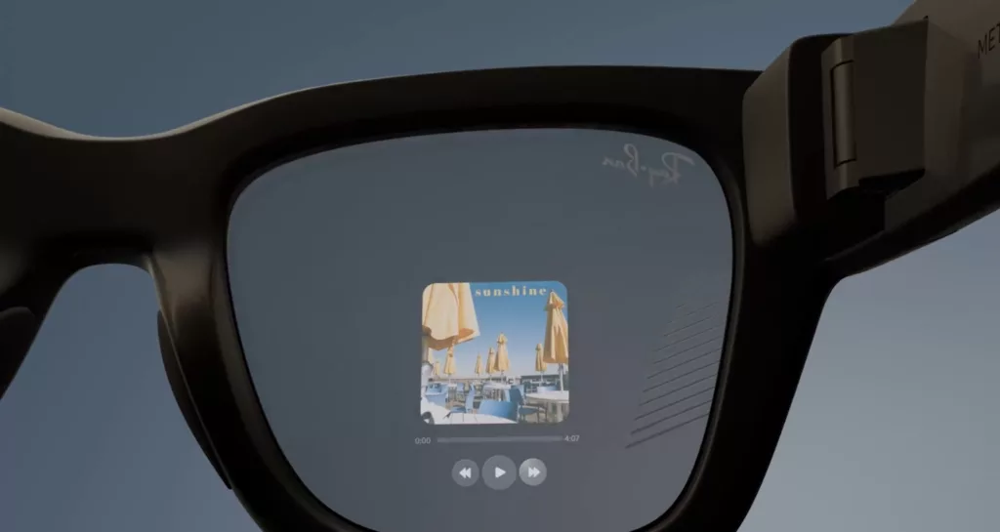

- Meta
- AR
- スマートグラス
- AIエージェント
- ウェアラブル
- EMG
- Neural Band date: 2025-09-21
Meta Ray-Ban Display発表：799ドルで始まるAIエージェント時代の到来¶

Meta Ray-Ban Displayが2025年9月17日に発表され、スマートグラス市場に革命をもたらそうとしています。さらに、この製品は799ドルという戦略的な価格設定で、一般消費者向けディスプレイ搭載スマートグラスの新時代を切り開きます。
画期的な発表：Meta Ray-Ban Displayの概要¶
Meta Connect 2025において、Mark ZuckerbergがMeta Ray-Ban Displayを正式発表しました。したがって、このスマートグラスは単なるウェアラブルデバイスではなく、次世代コンピューティングプラットフォームへの第一歩となります。
価格と発売スケジュール¶
Meta Ray-Ban Displayは799ドルで、2025年9月30日から米国の一部店舗で発売開始されます。加えて、2026年初頭にはカナダ、フランス、イタリア、英国への展開も予定されています。
この価格設定は、従来のRay-Ban Meta（379ドル）と比較すると高額ですが、ディスプレイ機能を考慮すれば妥当な設定といえます。特に、Meta公式サイトでは、段階的な価格戦略により市場浸透を図る意図が明確に示されています。
ディスプレイ機能の特徴¶
右レンズに搭載された高解像度フルカラーディスプレイは、Meta Ray-Ban Displayの中核機能です。具体的には、このディスプレイは着用者だけが見ることができるプライバシー重視の設計となっています。
WhatsApp、Messenger、Instagramからのメッセージ表示はもちろん、ビデオ通話やナビゲーション機能も搭載されています。さらに、Meta AIによる視覚的な検索結果の表示により、スマートフォンの主要機能を眼前で実現します。
Neural Bandが実現する革命的インターフェース¶
Meta Ray-Ban Displayの真の革新性は、Neural Bandと呼ばれる神経バンドコントローラーにあります。このため、従来のタッチスクリーンやボタン操作から解放された、全く新しいインタラクション体験が可能になります。
EMG技術の仕組み¶
Neural BandはEMG（筋電図）技術を使用して、脳から手に送られる信号を検出します。例えば、親指と人差し指の微細なタップジェスチャーだけで、Meta Ray-Ban Displayのディスプレイを操作できます。
この技術により、ポケットからスマートフォンを取り出す必要がなくなり、目立たない操作で情報にアクセスできます。EMG技術の詳細解説によると、この方式は将来的にさらに高度な操作も可能にする潜在力を持っています。
実用的な操作体験¶
Neural Bandは18時間のバッテリー寿命を誇り、防水仕様でアクティブな使用にも対応します。さらに重要なのは、Fitbitのようなシンプルなデザインにより、日常的な装着が可能な点です。
Zuckerbergはこの技術を「コンピューティング史における次章」と表現しました。実際に、Meta Ray-Ban Displayと組み合わせることで、周囲に気づかれずに情報を確認し、操作できる新しい体験が実現します。
Meta Ray-Ban DisplayとAIエージェントの融合¶
Live AI機能により、Meta Ray-Ban Displayは単なるディスプレイ付きメガネを超えた存在になります。つまり、着用者が見ているものを理解し、聞いているものを記録し、後から支援を提供できる真のコンテキストAIを実現します。
Live AI機能の詳細¶
Meta Ray-Ban DisplayのAI機能は、リアルタイム翻訳から視覚的な問い合わせまで幅広くカバーします。例えば、海外旅行中に看板や会話を即座に翻訳したり、見ているものについて質問したりできます。
さらに、コンテキスト記憶機能により、過去に見たものを後から参照することも可能です。このように、プロアクティブな支援により、状況に応じた自動的な情報提供が実現されます。
未来への展望：メタバースと現実の融合¶
Metaは、Meta Ray-Ban Displayを「次の主要なパーソナルコンピューティングプラットフォーム」と位置づけています。現在のRay-Ban Metaから、今回のDisplay、そして実験的なOrion ARグラスへと続く製品ロードマップは、段階的にARの世界を現実に統合していく戦略を示しています。
Meta Horizon StudioとHyperscape技術の統合により、物理世界とデジタル世界のシームレスな融合が可能になります。結論として、Meta Ray-Ban Displayは、AIエージェントとの新しい関係性を定義し、スマートフォンに代わる次世代プラットフォームへの重要な一歩となるでしょう。
総じて、2025年9月30日の発売は、コンピューティング史における新たな章の始まりを告げるものです。Meta Ray-Ban Displayにより、日常にAIエージェントが自然に溶け込む未来が現実に近づいています。